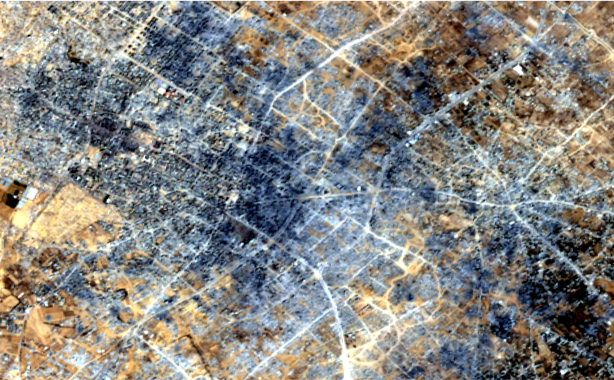
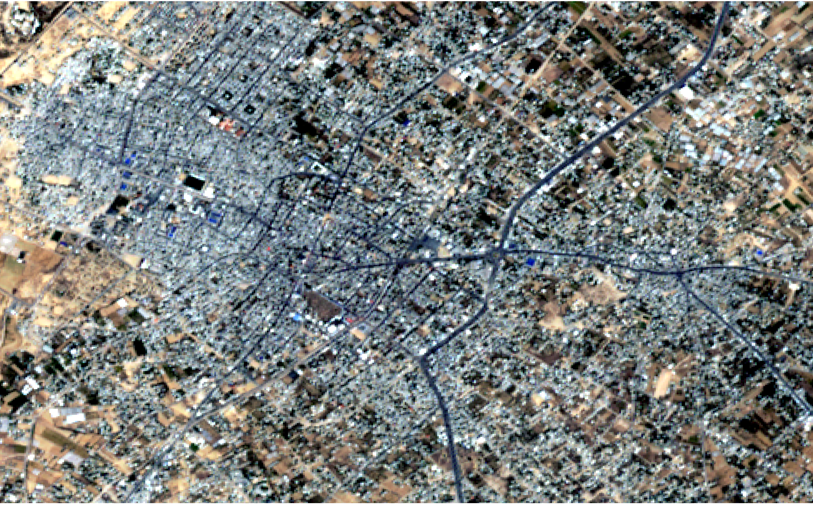

Scroll to see changes


Khan Yunis, a centuries-old city, was the second largest city in the Gaza Strip. It serves as an economic and educationa lcenter
Khan Yunis faced massive destruction in infrastructure and mass displacement orders. Cultural heritage, the medical infrastructure. and a closely knit society became destructed.